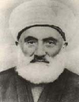

Abdülhakim Arvasî (1865-1943)

Nakþibendi tarikatýnýn Halidi kolunun þeyhlerindendir. Arvas Seyitleri olarak telakki edilen aileye mensuptur. Bu ailenin asýrlar öncesinden Van'a gelerek yerleþtikleri, Kadiri tarikatýna mensup olduklarý ve "Arvas Seyitleri" olarak anýldýklarý rivayet edilmektedir. Bu isimden dolayý "Arvasî" olarak anýlmýþ ve bu unvanla tanýnmýþtýr. Soyadý Kanunu çýkarýldýktan sonra "Üçýþýk" soyadýný almýþtýr. Osmanlý ve Cumhuriyet dönemlerinde muhtelif yerlerde hocalýk yapmýþ, tasavvuf þeyhliðinde bulunmuþtur. Risâle-i Nur'un yayýlmasýna engel olmaya çalýþan CHP yönetimi, bu amaçla bazý din adamlarýný art niyetlerine alet etmiþlerdir. Þeyh Abdülhakîm de bu maksada alet olmaktan kurtulamamýþtýr.Abdülhakim, 1865 yýlýnda Van iline baðlý Baþkale ilçesinde dünyaya geldi. Seyit Mustafa Efendinin oðludur. Soyu Abdülkadir-i Geylani (ra) hazretlerine dayandýrýlmaktadýr. Ýlk derslerini babasýndan aldý. Baþkale'deki ibtidai ve rüþdiye mekteplerini bitirdikten sonra, eðitim maksadýyla Irak'a gitti. Burada bazý bölgeleri dolaþarak alimlerden icazet aldý. Buradaki eðitimini de tamamladýktan sonra Baþkale'ye geri döndü.
Abdülhakim, Baþkale'ye döndükten sonra burada bir medrese yaptýrdý. Kendisine miras olarak kalan serveti bu amaçla harcayarak büyük bir kütüphane vücuda getirdi. Kendi kurmuþ bulunduðu medresesinde yirmi yýla yakýn bir süre boyunca ders okuttu. Daha sonra Halidiye Tarikatý þeyhlerinden olan Seyyid Fehim'e intisap etti. Bu arada bir çok müspet ve din ilimleri alanýnda bilgi alarak kendini yetiþtirdi. Akabinde bazý tarikatlarýn hilafetini aldý.
Birinci Dünya Savaþý'nýn baþlamasý ve Osmanlý Devleti'nin savaþa girmesinden sonra bölge Ruslar tarafýndan iþgal edildi. Bu arada Baþkale de Ruslar tarafýndan istila edildi. Bu iþgal ve istilayý fýrsat bilen Ermenilerin silahlanarak Müslüman halký katletmeleri üzerine bir çok aile yerini ve yurdunu terk etmek zorunda kaldý. Bu arada Þeyh Abdülhakim, 150 kiþiyi bulan ailesi ile birlikte daha güvenli yerlere geçmek maksadýyla buradan ayrýldý. Ýlk etapta Baðdat'a gidip yerleþmek maksadýyla göç etti.
Þeyh Abdülhakim, Musul'a vardýktan sonra burada iki yýl kaldý. Baðdat, Ýngilizler tarafýndan iþgal edildiði için buraya gidemedi. Ailesi ile birlikte tekrar göç ederek Adana'ya geldi. Buranýn da iþgal edilme tehlikesine karþýlýk Eskiþehir'e gitti. Daha sonra buradan da ayrýlarak 1919 yýlýnda Ýstanbul'a geçti. Eyüp'te kendisine tahsis edilen Yazýlý Medrese'de misafir edildi. Ayrýca, Kaþgari Dergahý þeyhliðine tayin edildi. Daha sonra Sultan Vahdettin tarafýndan Medrese-i Mütehassisin'e müderris olarak tayin edildi. Bu arada dergah þeyhliði, imamlýk ve vaizlik vazifelerini de ifa etti. Bu görevi tekke ve zaviyelerin kapatýlmasýna kadar devam ettirdi.
Tekke ve zaviyelerin kapatýlmasýndan sonra, tarikat faaliyetlerine ara veren Þeyh Abdülhakim, dergaha dönüþtürdüðü evinde tasavvuf faaliyetlerine devam etti. CHP'nin baþarýsýzlýðý, ülkenin içine düþtüðü ekonomik çöküntü sonrasý kurdurulan Serbest Cumhuriyet Fýrkasýna olan teveccüh, komplocularýn ve provokatörlerin iþine yaradý. Çýkarýlan Menemen hadisesi sonrasýnda, özellikle dindar kesim üzerinde büyük bir baský oluþturuldu. Çok sayýda insan tutuklanarak hapis ve aðýr cezalara çarptýrýldý. Þeyh Abdülhakim de tutuklandý ve Menemen'e gönderildi. Ancak, olayla ilgisinin olmadýðý anlaþýldý.
Soyadý kanununun çýkarýlmasýndan sonra Üçýþýk soyadýný alan Þeyh Abdülhakim, Ýstanbul'da çalýþmalarýna devam etti. Beyoðlu'nda bulunan Aða Camii ile Beyazýt Camilerinde bazý dersleri okuttu. Özellikle Necip Fazýl Kýsakürek'in kendisiyle tanýþmasý ve sohbetlerine devam etmesi daha çok tanýnmasýna vesile oldu. Bir ara Vefa Lisesi'nde de öðretmenlik yaptýðý aktarýlmaktadýr. Medreselerde daha çok tasavvuf ile ilgili dersleri okuttu ve bu konuyla ilgili bazý eserleri kaleme aldý.
Eylül 1943 yýlýnda sýkýyönetimin emriyle Ýzmir'e gönderilen Þeyh Abdülhakim'in ayný yýl içinde rahatsýzlýðý arttý ve hastalandý. Ýzmir'de zor þartlar altýnda yaþamasý, yaþýnýn da epey ilerlemiþ olmasýndan ötürü hastalýðýnýn þiddeti arttý. Akabinde Ankara'ya getirildi. Kýsa bir süre sonra da Ankara'da vefat etti (27 Kasým 1943). Naaþý Ankara'nýn kuzeyinde bulunan Baðlum Mezarlýðýna defnedildi.
Risâle-i Nur'un giderek geniþ bir kitle tarafýndan benimsenmesi ve çok sayýdaki talebeyi kendine baðlamasý, bazý yöneticilerin deðiþik yollara baþvurarak engellemeleriyle karþýlaþtý. Bir taraftan Üstad ve talebeleri hapse atýlýp muhtelif iþkencelere tabi tutulurken, diðer taraftan da bazý din adamlarý kullanýlarak Risâle-i Nur'un önü kesilmeye çalýþýldý. Risâle-i Nur ve Üstadý hakkýnda aleyhte konuþturulmak suretiyle davaya zarar verilmeye çalýþýldý. Gizli komitenin amacý, bazý kimseleri, Risâle-i Nur'a karþý kýþkýrtmak, tenkit etmelerini saðlamak ve bu yolla yayýlmasýný engellemekti.
Þeyh Abdülhakim'i de Bediüzzaman'ýn aleyhinde konuþmayý baþaran kesimler, tenkit edenler arasýna katýlmasýný saðladýlar. "Birinci Þua'da bazý Kur'an ayetlerinin iþari ve remzi manalarýnýn külliyetinde, cifir ve ebced tevafuklarýna" temas edilmesi ve asrýmýza bakan bazý iþaretlerin tezahürü ile ilgili beyanlarý tenkid eden Þeyh, farkýnda olmadan söz konusu komitenin oyununa alet oldu (Abdulkadir Badýllý; Bediüzzaman Said-i Nursi Mufassal Tarihçe-i Hayatý, C. 2, Ýstanbul 1998, s. 1103). Yapýlan haksýz eleþtirilere raðmen, Bediüzzaman'ýn söz konusu tenkitçiler hakkýnda itinalý davranmasý ve onlarýn hareketlerine benzer tavrý takýnmamasý dikkat çekicidir.
Bediüzzaman, Kur'an tefsiri ile ilgili yapýlan eleþtirilere þöyle cevap verdi: "… biz demiyoruz ki, ayetin mana-yý sarihi budur. Ta, hocalar fihi-nazar desin. Hem dememiþiz ki, mana-yý iþarinin külliyeti budur. Belki diyoruz ki, mana-yý sarihinin tahtýnda müteaddit tabakalar var. Bir tabakasý da mana-yý iþari ve remzidir. Ve o mana-yý iþari de bir küllidir, cüziyatlarý var…" (Kastamonu Lahikasý, s. 120, 121).
Bediüzzaman, Risâle-i Nur ve þahsý ile ilgili çevrilen dolaplara dikkat çekerken, bu oyuna alet olanlar için "biçare" tabirine yer verdiði de görülmektedir. Ayrýca, yaptýðý hizmete engel olmanýn hiç kimseye fayda saðlamayacaðýna ve talebelerinin de dindar insanlara karþý hassas olmalarý gerektiðine iþaret etmektedir (Þualar, s. 286). Bediüzzaman, bazý safdil insanlarýn ve bazý cüretkar talebelerin, yaptýklarý yanlýþlarla, fýrsat kollayan kesimlerin iþini kolaylaþtýrdýðýný belirtmektedir. Bununla birlikte aleyhine sevk edilen Þeyh Abdülhakim gibi zatlarýn da söz konusu durumdan zarar gördüklerini, mütedeyyin insanlarýn birbirinin aleyhinde bulunmalarýnýn hiçbir fayda saðlamayacaðýný da örnekleriyle birlikte ortaya koymaktadýr (Þualar, s. 289).
Þeyh Abdülhakim, Rabýta-i Þerife ve Riyazü't-tasavvufiye adlý eserleri kaleme almýþtýr. Birinci eser Necip Fazýl Kýsakürek tarafýndan sadeleþtirilerek yayýmlanmýþtýr. Eserde rabýta ve uygulamasýyla ilgili bilgilere yer verilmektedir. Eserinde, Nakþibendi tarikatýnýn adabý hakkýndaki açýklamalar yer almaktadýr. Ýkinci eserde ise tasavvuf, tasavvuf tarihi ve kavramlarýyla ilgili bilgilere yer verilmektedir. Bu eserini medresede hocalýk yaptýðý sýralarda kaleme almýþtýr. Bu eser de Necip Fazýl Kýsakürek tarafýndan sadeleþtirilerek Tasavvuf Bahçeleri adýyla yayýmlanmýþtýr.